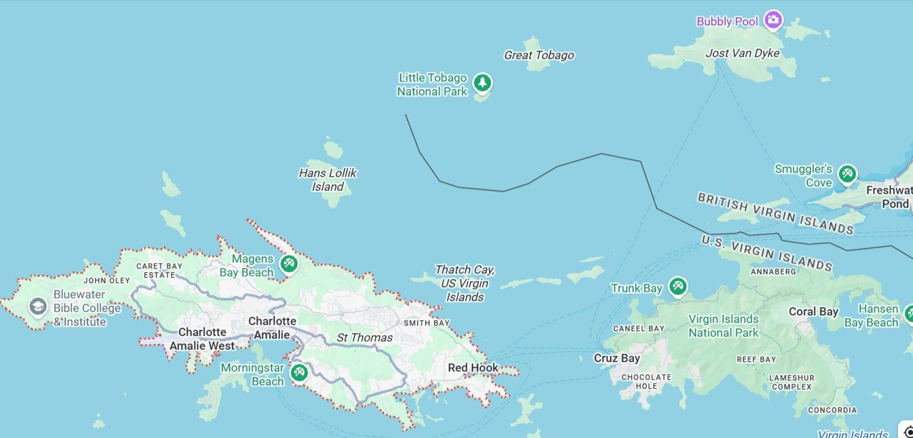
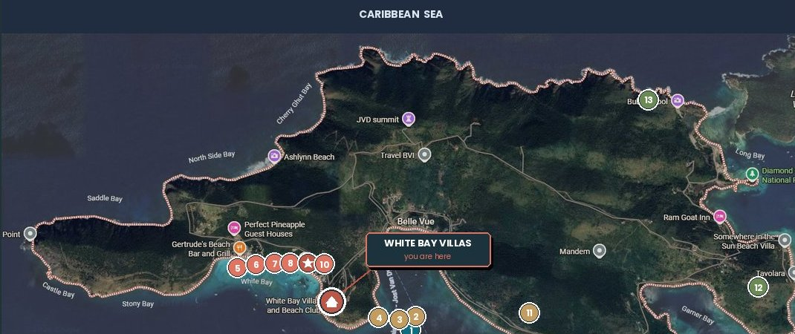
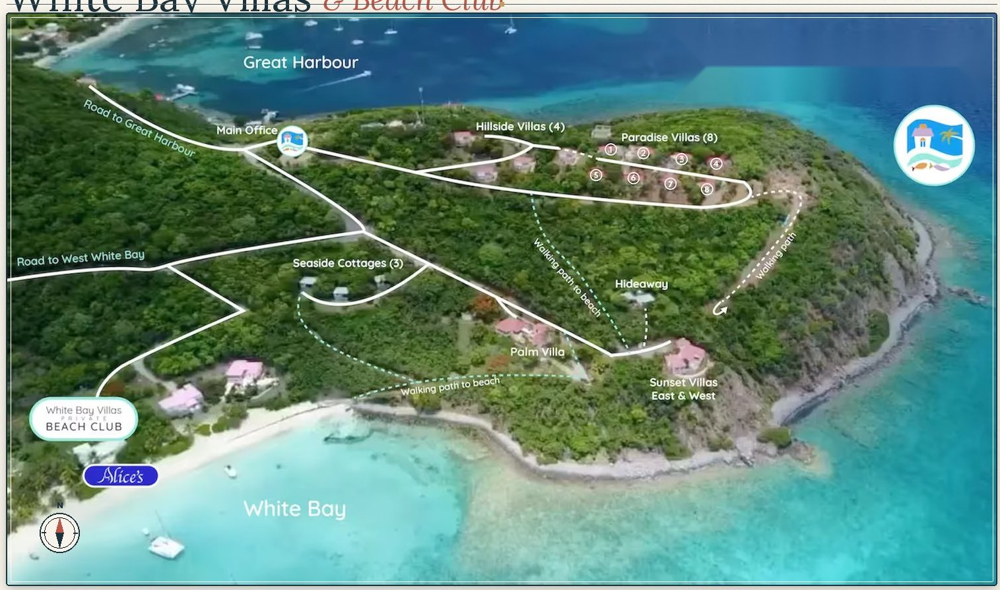

Arrivals Guide · Jost Van Dyke, BVI
Three airports. Four good ways across the water. One short ride up the hill. We'll walk you through every step — no guesswork, no panicked WhatsApps from the ferry dock.
— The big picture
You'll fly into either the US Virgin Islands or the British Virgin Islands, then cross a short stretch of open water. Here's how all the pieces fit together.

Flying into STT? Land by 3:00 PM local time to comfortably make the last 5:00 PM ferry to Tortola. Later than that, you'll need a private water taxi or an overnight in St. Thomas.
Especially private charters. Ferry tickets can usually be bought online a day or two in advance, and we strongly recommend it during peak season to guarantee a seat.
Times, prices, and routes can shift seasonally. Always confirm with the operator 24–48 hours before you travel, especially if your itinerary depends on a tight connection.
— Choose your arrival airport
Pick the airport you're flying into, and we'll show you every realistic way to make the crossing.
If your STT arrival is on a Tuesday or Wednesday, use Roadtown Fast Ferry as the Red Hook → West End substitute on those days. Same dock, same destination — different operator. Confirmed through summer.
— The last mile
You're already 95% there. A 5-minute taxi or 15-minute walk over the hill, and you're at White Bay Villas.


— Once you're on Jost
The ferry drops you at Great Harbour. From there, it's a 5–7 minute taxi ride over the hill to our property at White Bay — or about a 15–20 minute walk if you're traveling light. Taxis are always waiting when the ferry rolls in. Save a few numbers to your phone before you fly.
— When it's time to leave
Same routes, run in reverse. With a few extra wrinkles you should know about — especially if you're flying out of St. Thomas.
Flying out of STT? Your flight should be 1:30 PM or later if you're taking the earliest ferry back. Two ferries, customs at St. John, and a 30-min taxi to the airport — and STT expects you 3 hours early for international with checked bags.
All return ferries clear US customs in St. John — not at the STT airport. You'll go through customs once on the ferry side, then a second time at the airport. Build in extra buffer.
If your departure is before 1:30 PM, take a private water taxi. The cost is more than worth the reduced stress, and Allure can pick you up directly from White Bay.
Same as outbound — if your departure day from West End is a Tuesday or Wednesday, use Roadtown Fast Ferry as the West End → Red Hook substitute. Both clear US customs at St. John.
We've been doing this for 40 years. Reach out — we'll happily walk you through it.
Ferry schedules, water taxi availability, and customs fees are set by third parties and can change. Always confirm directly with the operator within 48 hours of travel. A valid passport is required for all USVI ↔ BVI crossings.